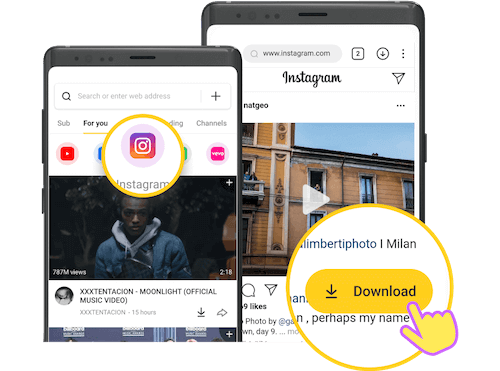

Instagram, with its eye-catching photos, binge-worthy videos, and mesmerizing Reels, has taken over our social media lives. Whether you're getting lost in an endless scroll or curating your own feed, there’s always something that catches your eye. But here’s the kicker: Instagram doesn’t let you save Instagram stuff via Snaptube. Yep, nada. No videos, no Reels, not even those hilariously weird cat videos. So, what do you do when you want to keep some of that stuff forever?
Enter Snaptube, the unsung hero of Instagram downloads. Forget about screenshotting everything or praying that your favorite video doesn't vanish into the abyss of disappearing stories. Let’s dive into how to save Instagram stuff (yep, all the stuff) via Snaptube—because why not enjoy your favorite content offline, too?
If you've ever tried saving an Instagram video or Reel directly from the app, you’ve probably noticed that the feature is as elusive as Bigfoot. Instagram just doesn’t let you download videos, at least not in the traditional sense. The platform focuses on user engagement, encouraging people to stay connected online, not stockpile content offline.
But Instagram's refusal to add a download button doesn’t mean you're completely out of luck. There are tools like Snaptube that swoop in like caped crusaders, helping you download and keep all the Instagram goodness you want.
Snaptube is a free app that does what Instagram won’t—it lets you download videos, Reels, and images from the platform, all with just a few taps. It’s fast, easy, and doesn’t require a degree in rocket science to use. Think of it as that one friend who always has a solution to your tech problems.
With Snaptube, you can grab videos in high quality, whether you’re downloading a funny cat video to show your grandma later or snagging some fitness tutorials for offline workouts. Plus, you don't need to sign up, register, or jump through any hoops. It's as simple as pie (and who doesn’t love pie?).
Ready to become the master of Instagram downloads? Here’s a simple guide to help you get started with Snaptube:
Okay, so we’ve established that Snaptube can do the job. But why should you pick it over other download tools? Let’s break it down:
Now, while Snaptube is pretty much the MVP of Instagram downloads, it's not the only player in the game. Here are a few other options you can try:
If you’re tired of staring longingly at Instagram posts, knowing that they’ll disappear after 24 hours, Snaptube is your solution. It's free, it's easy, and it’s like having a magical assistant that saves your favorite Instagram videos for offline enjoyment.
So, next time you stumble upon a cooking tutorial or a meme that’s too good to forget, remember that Snaptube has your back. Download responsibly and maybe share the love with friends!